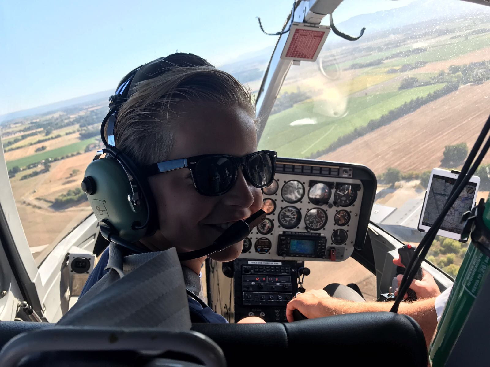

Over mij

Ik ben Wessel ik ben 12 jaar oud
Hobbies
dit zijn mijn hobbies:
- schaken
- roeien
- Programmeren
- Vissen
Contact
Je kan mij bereiken via wessel.wenneker@coderclass.nl
Leuke linkies
Dit is de link naar mijn portofolio
Dit is een leuke site om te leren programmeren
Dingen die ik leuk vind:
Programmeren
Roeien
Schaken
Netflix kijken
Mijn top 3 van films:
- Deadpool
- Deadpool 2
- Zootropolis
Mijn 3 favoriete merken:
- Apple
- Nike
- The North Face
Mijn lievelingsdingen
- Mijn lievelingsmuziek:
- The lazy song
- I feel good
- Perm
- Mijn lievelingskleuren:
- Rood
- Oranje
- Groen
- Mijn lievelingsdingseten:
- pizza
- Chocolade rozijnen
- Biefstuk van loetje
Dit ben ik
Hoogste schaakrating